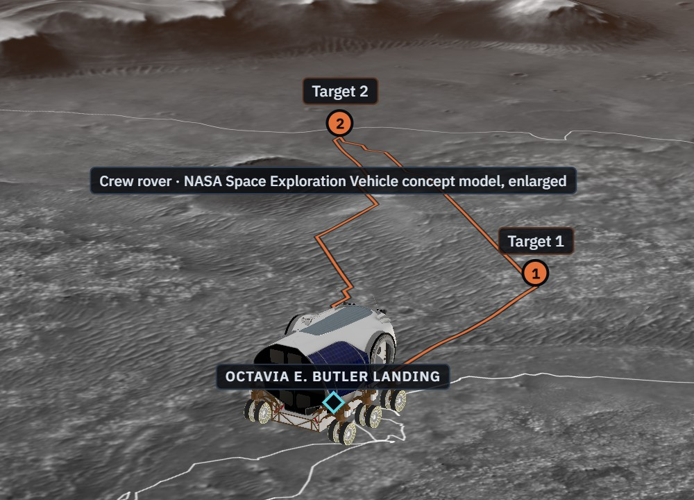

HOW IT WORKS
A Marswalk in three steps: plan, check, run.
01 · PLAN

Where can the crew go?
The route is computed on 20 m NASA elevation data. Rovers stay under 20°; Perseverance never crossed more than 18.3° here.
02 · CHECK

Can it get back safely?
The trip is checked against oxygen or battery, with a reserve. A plan that does not fit is refused, and the shortfall is shown.
03 · RUN

What if the plan breaks?
The traverse runs as a simulation. An obstacle, a dust storm, a suit leak or a health alert forces a new plan, and the log records why.
BEYOND EARTH LABS03 / 05